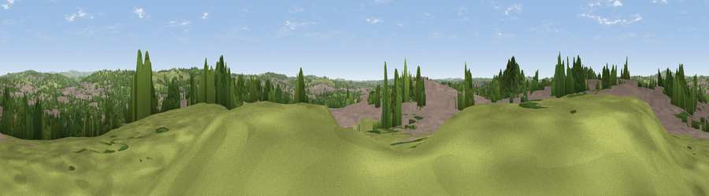

Viewpoint near Hanley
#28730 in England · top 49% of its area beats it · near HanleyWhere it is
The exact computed spot (SJ 89275 49025). Click the marker for map links.
The view, rendered

A 360° render of this exact spot computed from the terrain model, tree cover and land cover — summer colours, afternoon light, calibrated against photographs of famous viewpoints. Real trees, hedges and buildings will differ in detail.
The panorama
Grey silhouette: terrain skyline in each direction (720 bearings, Earth curvature and refraction included). Dashed green: skyline with trees (+15 m) and buildings (+8 m) as obstacles. Blue strip: how far the ground is visible on each bearing.
Where the view opens
Wedge length = distance to the farthest visible ground on that bearing (vegetation-aware). Rings at 10, 25 and 50 km.
What fills the view
46% built-up · 30% woodland · 23% grassland ·
Angular shares of the visible panorama (visual magnitude), not map area. Landscape diversity 0.48 (0–1 Shannon).
Key numbers
More beautiful places nearby
The staircase of upgrades: each row has a higher view potential than everything closer. Driving times are estimates from straight-line distance, calibrated against real road routing — check an actual route before setting out.
| Place | Direction | Drive | Score |
|---|---|---|---|
| Forest Park Viewing Point | W · 1 km | ~3 min | 55.0 |
| Viewpoint near Bagnall | ENE · 3 km | ~7 min | 57.0 |
| Viewpoint near Brown Edge | NNE · 5 km | ~12 min | 65.2 |
| Ashenough Hill | WNW · 7 km | ~14 min | 66.0 |
| Bignall Hill | WNW · 7 km | ~15 min | 75.2 |
| Viewpoint near Mow Cop | NNW · 9 km | ~18 min | 80.2 |
| Viewpoint near Harthill | W · 39 km | ~58 min | 80.5 |
| Viewpoint near Little Wenlock | SSW · 48 km | ~69 min | 84.2 |
53.03839, -2.16140 · source: screening · position refined by local search. Computed location — check access rights before visiting.